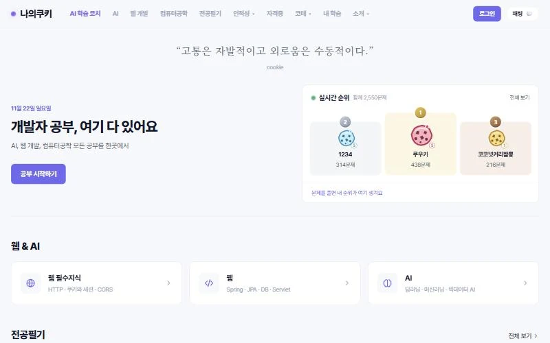
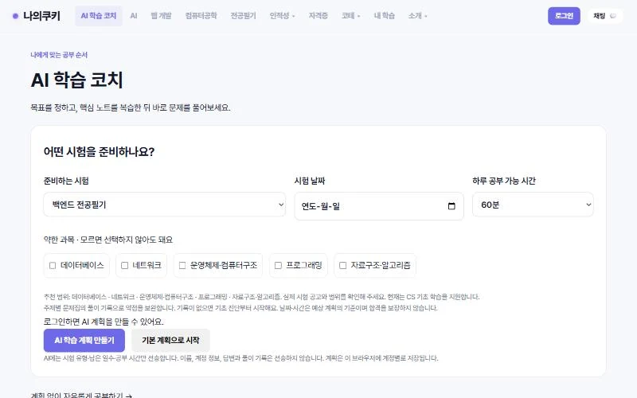
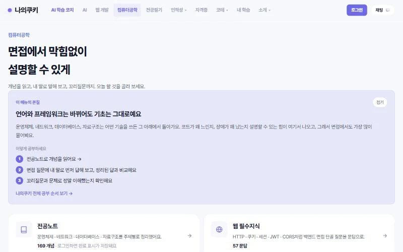
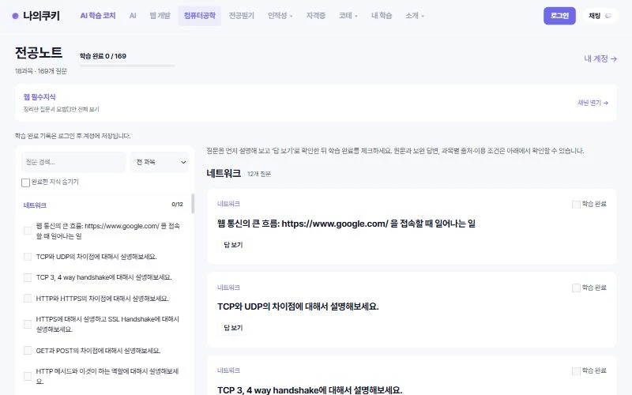
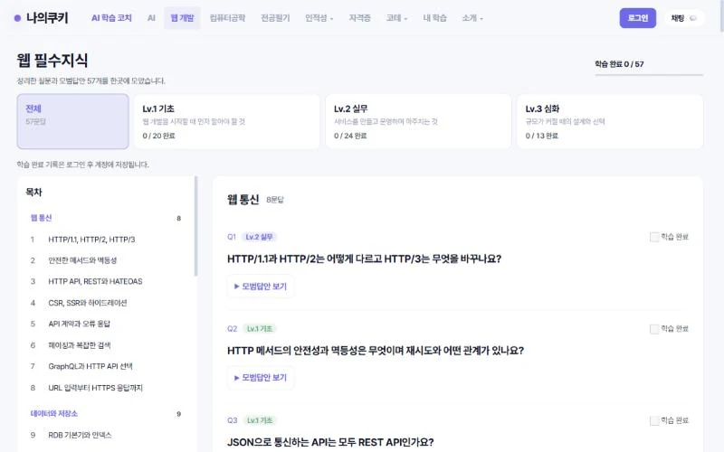
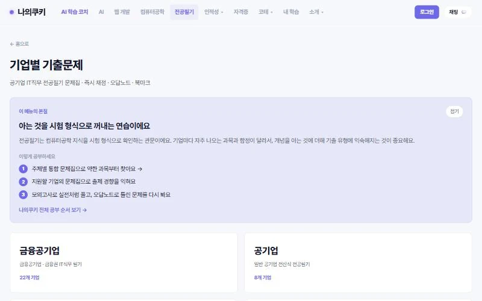
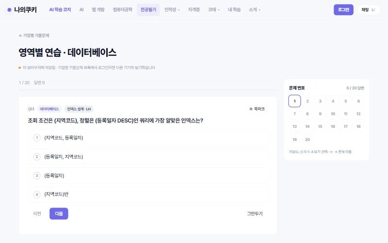
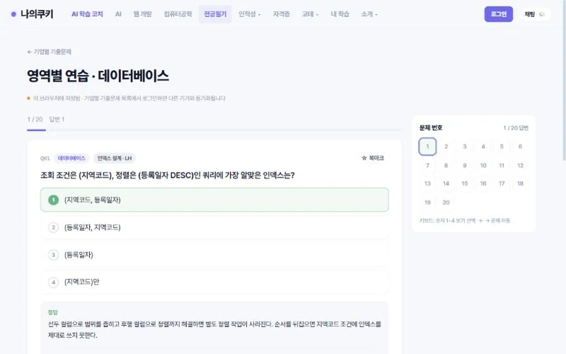
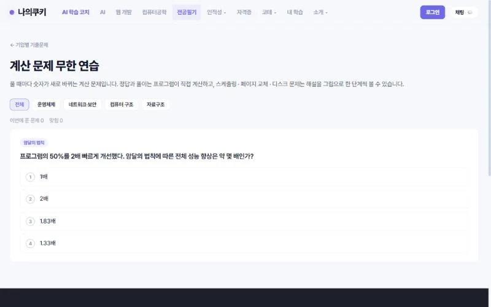
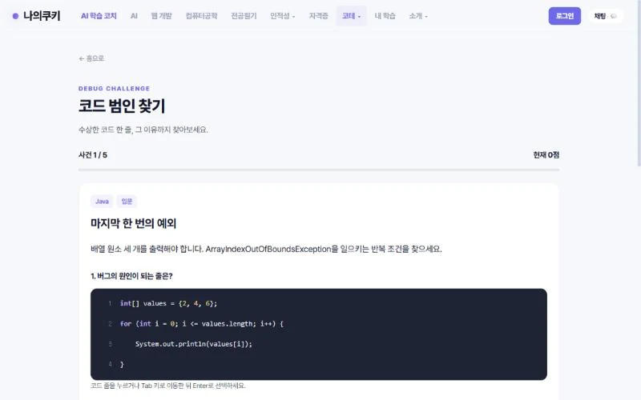
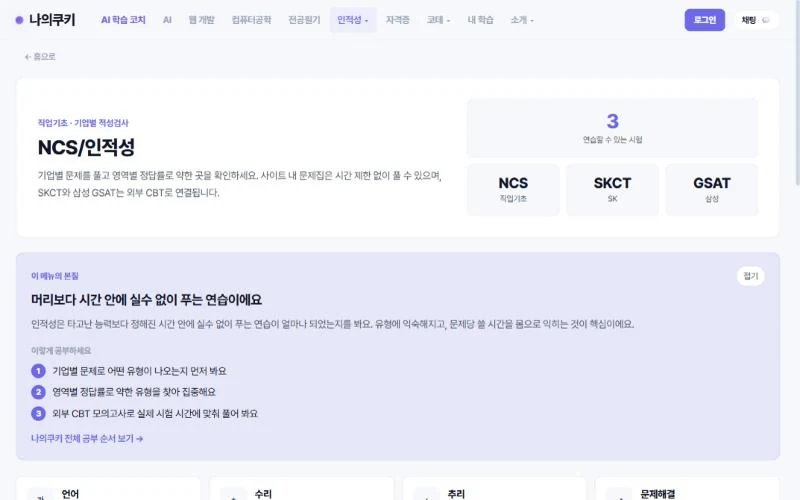
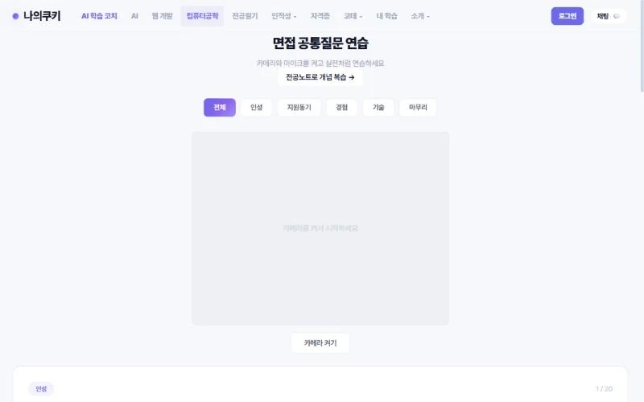
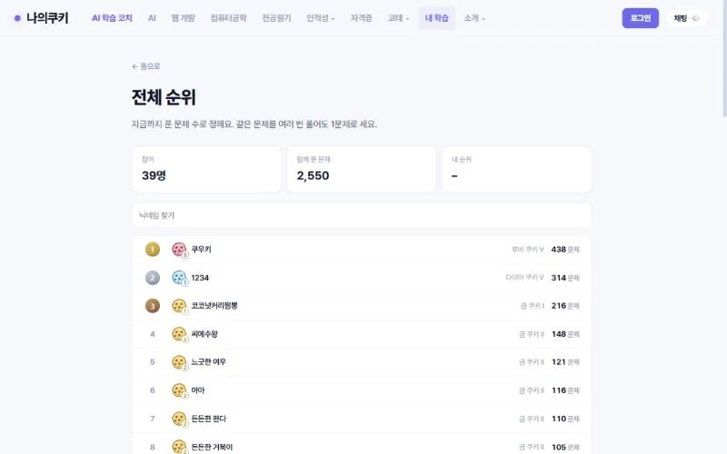
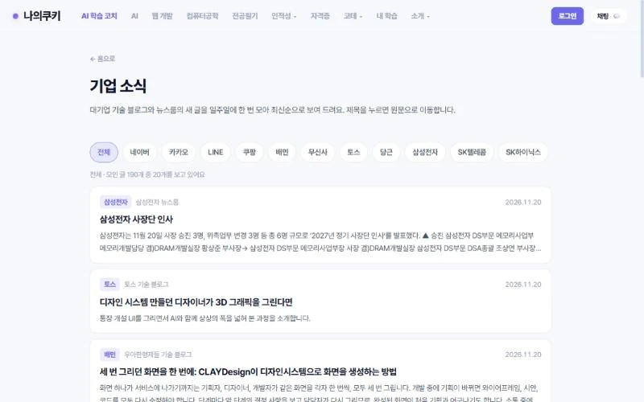
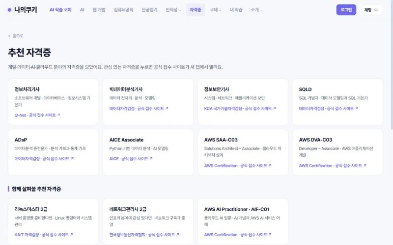
01 / 15홈 · 실시간 순위오늘의 명언과 문제 풀이 수 기준 실시간 순위
삼성청년SW·AI 아카데미 16기 · 개발자 학습 플랫폼 2026.09 — 진행 중
나의쿠키
전공 지식의 반복 학습과 학습 기록 관리가 어렵다는 문제에서 시작한 웹 서비스입니다. 문제 풀이 · 오답 복습 · 실시간 1:1 대결 · 순위와 등급제를 제공하고, 홈서버에서 직접 운영합니다.
역할 개발 및 운영 / 백엔드, 홈서버 인프라, CI/CD
- RAG 근거 검색 Hit@1 86.4% → 96.6%
- 커넥션 풀 고갈 해소, 일반 조회 p95 976ms → 99ms
- SSE 채팅 메시지 유실 7.7% → 0%
- 8GB 홈서버 이전과 데이터 사본 3개 백업
주요 문제 해결
2단계 검색 및 재정렬을 통한 RAG 근거 검색 정확도 개선 Hit@1 86.4% → 96.6%, MRR@5 0.911 → 0.977
- 단순 벡터 검색에서 질문 표현에 따라 정답 문서의 검색 순위가 달라지는 문제 개선
- 학습 문서 109개를 538개 청크로 분할, 113문항 평가셋 구성
- 벡터 검색 Top-10 → Cross-Encoder 재정렬 → 최종 Top-5 선택
- 재정렬 점수 기준 미달 시 LLM 호출을 생략하도록 설계
- 평가셋 Hit@1 86.4% → 96.6%, MRR@5 0.911 → 0.977
HikariCP 커넥션 풀 고갈과 조회 지연 개선 동기화 p95 1,066ms → 323ms, 일반 조회 p95 976ms → 99ms
- 로그인 직후 학습 기록 동기화 요청이 집중되면서 커넥션 풀 10개가 포화되고 일반 조회 API까지 지연
- 사용자 행 잠금 상태에서 문제집 JSON을 반복 파싱하는 병목 확인
- 푼 문제 수 별도 저장 및 SUM 쿼리로 반복 계산 제거
- 사용자별 잠금을 커넥션 획득 이전으로 이동하고 트랜잭션 범위 축소
- k6 부하 테스트 결과 동기화 p95 1,066ms → 323ms, 일반 조회 p95 976ms → 99ms
- 평균 커넥션 대기 요청 160개 → 16개, 일반 조회 처리량 약 4.3배 향상
실시간 채팅 동시 접속 몰림에 따른 SSE 전송 구조 개선 몰림 시 메시지 유실 7.7% → 0%, 전달 지연 p95 7,518ms → 112ms
- 접속자 몰림을 가정한 부하 시나리오에서 접속 200명 초과 시 SSE 연결 거부(503), 메시지 유실과 수 초 지연 확인
- 전송 스레드 1개, 대기열 64칸, 넘치면 오래된 작업을 버리는 구조로 메시지가 조용히 사라지는 원인 확인
- 새 글, 입장마다 최근 100개 전체를 모두에게 보내던 방식을 변경분(새 글 1개, 참여자 목록)만 보내도록 변경
- 접속자별 대기열로 느린 연결이 전체 전송을 막지 않게 하고, 넘친 연결은 끊고 다시 받게 해 유실 제거
- 연결 거부를 예외 대신 이벤트로 알려, 거부마다 ERROR 로그가 쌓여 장애 알림이 오탐되는 문제 해결
- 같은 조건 부하 테스트 결과
- 동시 접속 300명: 연결 거부 100명 → 0명, 전달 지연 p95 2,014ms → 42ms
- 메시지 몰림: 유실률 7.7% → 0%, 전달 지연 p95 7,518ms → 112ms
- 메시지당 전송량 12,373B → 831B (약 93% 감소)
클라우드에서 온프레미스 홈서버 이전 및 백업 체계 구축Blog 8GB 온프레미스 홈서버로 이전, 데이터 사본 3개 유지
- Vercel, Render, Neon의 무료 자원 제약을 해결하기 위해 8GB 온프레미스 홈서버로 서비스 이전
- Docker Compose 기반 Nginx, Spring Boot, PostgreSQL, Redis, Kafka 컨테이너화 및 메모리 사용량 제한
- 운영·스테이징 DB와 계정 분리, Redis Key Prefix 및 Kafka Topic, Consumer Group 격리
- Cloudflare Tunnel을 통해 외부 포트 개방 없이 HTTPS 서비스 제공
- 로컬, 클라우드 이중 백업 및 데이터 복구 체계 구축
- 운영 DB 원본·홈서버 로컬 백업·Google Drive 원격 백업으로 데이터 사본 3개 유지
- systemd timer와 pg_dump로 매일 04시 자동 백업
PR 위험도 기반 CI/CD 및 장애 대응 자동화Blog PR 위험도 3단계 자동 판정으로 미검증 변경의 병합 차단
- 수동 테스트와 배포 과정에서 검증 누락과 운영 환경으로의 미검증 코드 반영 위험을 줄이기 위해 workflow 구축
- GitHub Actions로 Spring Boot 통합 테스트, 프론트엔드 빌드, 린트 및 데이터 정합성 검사 자동화
- 변경 파일을 보안·DB 스키마·배포 설정 등으로 분류해 PR 위험도 3단계 자동 판정
- GitHub Rulesets로 PR 병합과 필수 CI 검사를 강제하고, 위험도별 승인 조건은 위험도 검사로 자동 판정해 미검증 변경의 병합 차단
- dev → 스테이징, master → 운영 브랜치 분리 및 systemd 타이머 기반 자동 배포 구성
- 운영 장애 감지 및 알림 체계 구축
- 치명 오류 즉시 감지, 5분간 ERROR 10건 이상 및 3회 연속 헬스체크 실패 시 Mattermost 알림